How neural networks learn to see
Module 2 · Class 04 · Gen AI Engineer Course
You've trained neural networks on tabular data. Today you'll train one that sees. By the end of class you will build a CNN from scratch, reach ~85% on Fashion-MNIST, and score it with the metrics every production classifier is judged on.
What a filter does, why parameter sharing is what lets CNNs scale to large images.
Conv2d, MaxPool2d, flatten, Linear — four primitives, one nn.Module.
Your first image classification task — CrossEntropyLoss, the full training loop, and ~85% accuracy.
Accuracy, confusion matrix, per-class precision / recall / F1, and ROC — the metrics every production classifier is scored on.
Fully-connected networks can classify images — but the cost scales badly and they throw away spatial structure. Convolution fixes both problems with a single architectural idea: small, shared filters that respect locality.
Fully-connected layers are a natural tool for tabular data: every input feeds into every neuron. On images that universal connectivity is exactly the problem — the weight count explodes and spatial structure is thrown away.
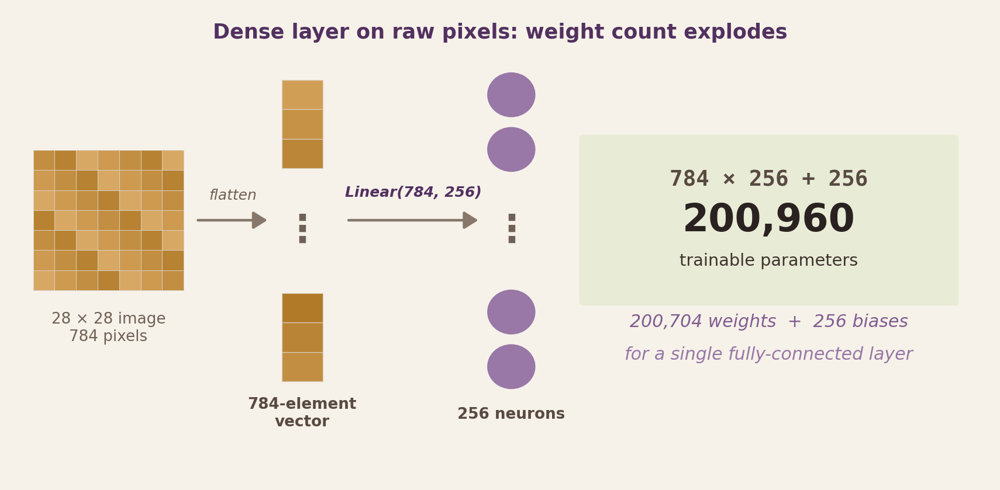
Pixels (5, 5) and (5, 6) were neighbours. Flatten the image and the FC layer sees 784 arbitrary-order numbers with no clue which were next to which.
A single Linear(784, 256) takes 200,960 weights + biases. At ImageNet resolution that blows up to ~38 million — for one layer.
A cat in the top-left and the same cat in the bottom-right activate completely different weights. The FC network has to re-learn the same feature at every position.
A small filter slides across the image, sharing the same weights at every position. That one idea — local receptive field plus parameter sharing — gives us spatial locality, translation invariance, and size-independent weight counts.
Before we drill into the pieces, here is the whole thing on one slide. The convolutional stack on the left extracts features; a small dense network on the right turns those features into class scores. Every slide in Sections 2 and 3 is a deep-dive into one block of this diagram.
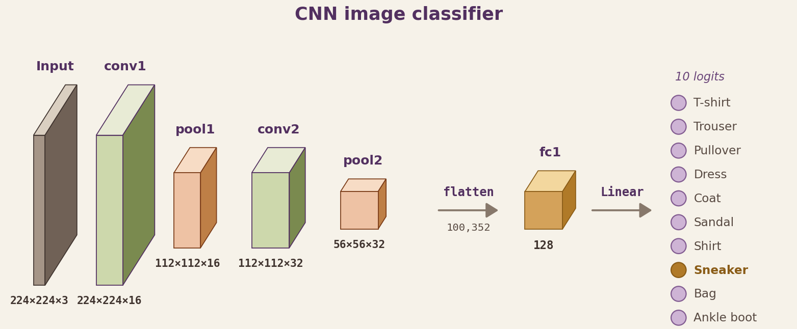
Stacked conv → ReLU → pool blocks. Each block halves the spatial size while growing the channel depth — edges give way to textures, then parts.
Reshapes the 3D feature tensor (C, H, W) into a 1D vector so the dense head can consume it. Feature extraction is already done — flattening here is safe.
A small dense network that maps features to one logit per class. argmax picks the prediction; the loss compares it to the true label.
You'll see this architecture three times across the lecture, each through a different lens: the big picture here, the feature-extractor / classifier split in Section 3, and the final PyTorch code.
Convolution, stride, padding, channels, pooling — the five operations a CNN stacks to turn pixels into features. We'll introduce each one with a concrete visual, then use them in Section 3.
A filter — a small matrix of weights, here 3 × 3 — slides across the image. At every position it multiplies with the 3 × 3 patch underneath, sums the result into a single number, and writes that number to the corresponding cell of the output. The output is a new image called a feature map.
The same 9 filter weights are applied at every position.
One filter = 9 weights total, reused across the whole image. No matter how big the image gets, the weight count stays the same.
Each output cell depends only on its 3 × 3 neighbourhood. Nearby pixels influence each other; distant pixels do not — just like real images.
One filter = one pattern detector. Early layers pick up edges and gradients; stack them and deeper layers respond to textures, object parts, finally whole objects.
Real numbers. 5 × 5 input, 3 × 3 filter (a vertical edge detector: [[1,0,-1],[1,0,-1],[1,0,-1]]). Watch the filter slide through all 9 positions — each position produces one output cell as the dot product of patch and filter.
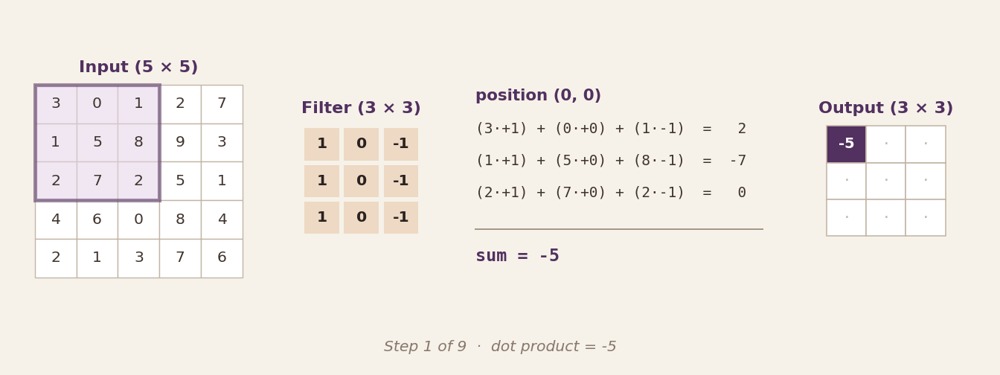
The filter's 9 weights never change as it moves — that's the same vertical-edge detector being reapplied at every spatial position. Because the filter is 3 × 3 and the input is 5 × 5, the output is 3 × 3 (no padding, stride 1). Reset the animation and count the positions: 3 across × 3 down = 9 output cells.
Three knobs control the output spatial size of a convolution. Each panel below shows the same 5 × 5 input under different settings, with the filter drawn at its first (solid) and second (dashed) positions.
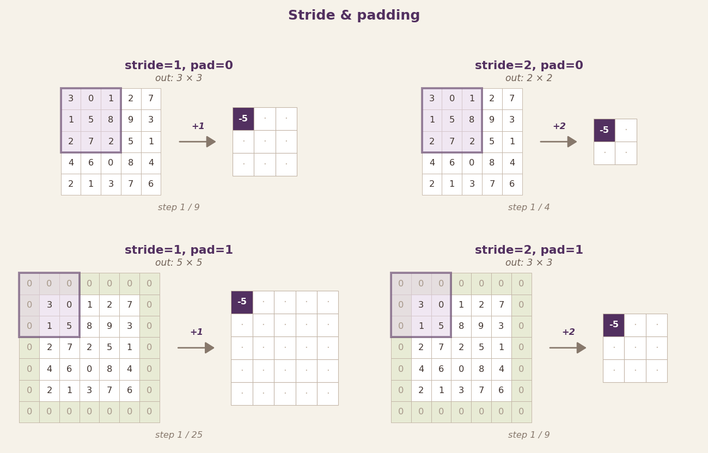
in = input size · k = kernel · p = padding · s = stride
Pixels the filter moves per step. 1 = full resolution. 2 = output half the size and 4× cheaper compute.
Zeros added around the input border so the filter covers edge pixels. padding=1 with a 3×3 kernel is "same" — preserves H and W.
3 × 3 kernels, padding=1, stride=1. Spatial size unchanged by conv; pooling halves it.
After convolution, feature maps can be large. Max pooling slides a small window (typically 2 × 2, stride 2) over the map and keeps only the maximum value in each window.
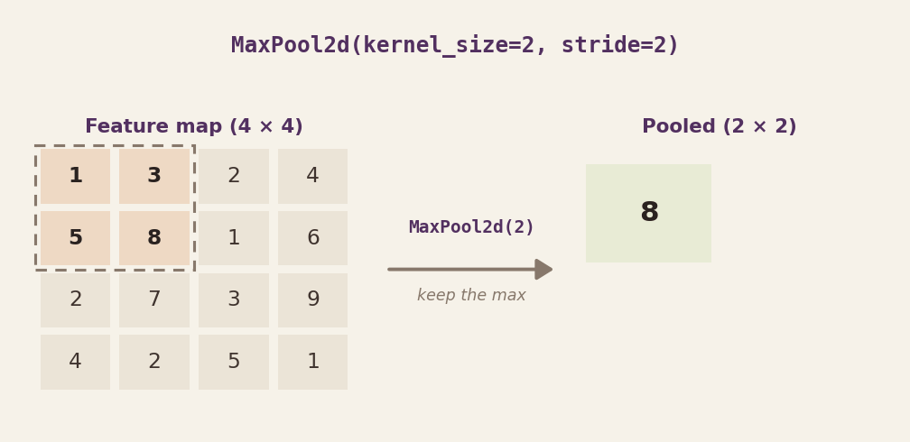
Modern architectures sometimes replace pooling with stride-2 convolutions — the convolution itself downsamples. This lets the model learn how to downsample instead of using a fixed operation. Pooling is still the simpler default, and the one you'll reach for first.
Average pooling uses the same 2 × 2 window but takes the mean of each window instead of the max. Same shape reduction, same zero parameters — but a different signal survives.
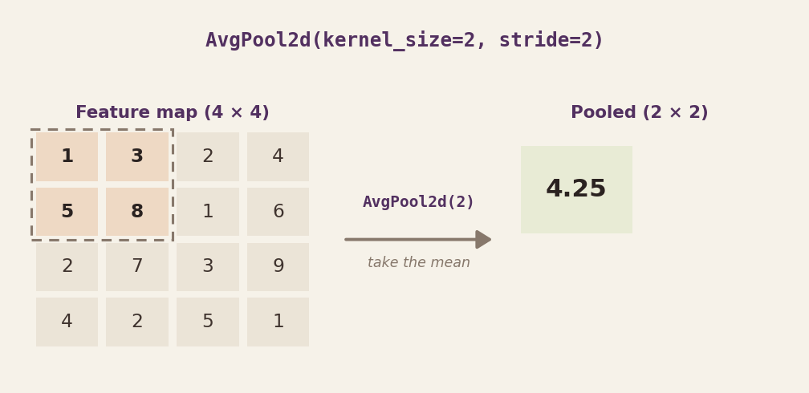
Take the mean over the entire spatial map, producing one number per channel. A (32, 7, 7) tensor becomes (32,) — no flatten, no giant Linear layer, huge parameter savings. This is why modern classifiers barely have a fully-connected head.
From math to nn.Module. We wire the primitives into a network, trace tensor shapes through every layer, and end with working code you can read top-to-bottom.
nn.Conv2d in PyTorchOne line creates a full convolutional layer with learnable filters. Five parameters cover 95% of real use — pass an input with in_channels planes and it produces out_channels feature maps.
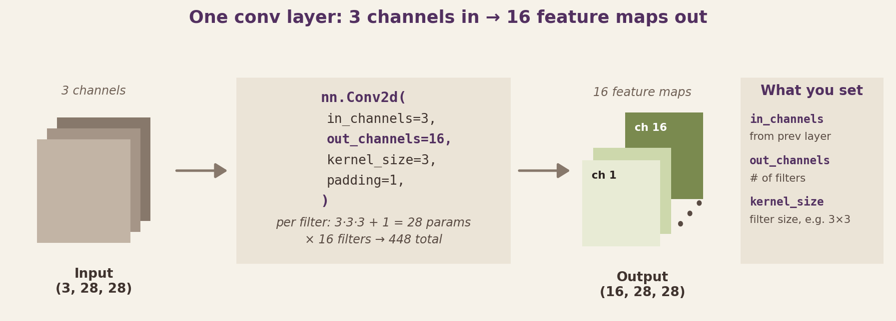
import torch.nn as nn conv1 = nn.Conv2d( in_channels=3, # 3-channel RGB input (= data channels or prev layer's out_channels) out_channels=16, # produce 16 feature maps — your design choice kernel_size=3, # 3×3 filters (standard) stride=1, # move 1 pixel per step (default) padding=1 # "same" padding — preserves H and W )
Conv2d(3, 16, 3) has 448 params on any image size — 16 filters × (3×3×3 weights + 1 bias). Compare to Linear(3·H·W, 16) on a flattened image: the weight count grows with H and W. Convolution's count stays constant as the image gets bigger.
Stack two Conv → ReLU → Pool blocks, flatten, then two Linear layers. You already know the nn.Module pattern from Class 03 — only the layers inside are new.
class SimpleCNN(nn.Module): def __init__(self): super().__init__() # Feature extractor self.conv1 = nn.Conv2d(3, 16, kernel_size=3, padding=1) self.conv2 = nn.Conv2d(16, 32, kernel_size=3, padding=1) self.pool = nn.MaxPool2d(2) # Classifier self.fc1 = nn.Linear(32 * 7 * 7, 128) self.fc2 = nn.Linear(128, 10) def forward(self, x): x = self.pool(F.relu(self.conv1(x))) # (B, 16, H/2, W/2) x = self.pool(F.relu(self.conv2(x))) # (B, 32, H/4, W/4) x = torch.flatten(x, 1) # (B, 32·H/4·W/4) x = F.relu(self.fc1(x)) # (B, 128) return self.fc2(x) # (B, 10) — raw logits
Most of the parameters live in fc1, not in the convolutions. This is typical — convolutions are compute-heavy but parameter-light, and the flatten-into-dense head is where weight count piles up.
Flatten isn't a CNN-specific thing. It's a generic reshape layer whose only job is to collapse the trailing dimensions of a tensor so the next layer's expected input shape is satisfied. Here the conv stack produces a 3D tensor (C, H, W) and the dense head expects a 1D vector — flatten bridges them. No learnable weights, no magic.
# Inside forward(), after the last conv + pool block: # x has shape (batch, C, H, W) — e.g. (batch, 32, 7, 7) x = torch.flatten(x, start_dim=1) # keep batch dim; flatten the rest # x is now shape (batch, C·H·W) — one row per sample, ready for Linear
The first Linear layer's input size must equal C × H × W after the last pool. Change pool count, channels, or input resolution and that product changes — your Linear(C·H·W, …) errors. Always recompute when the architecture changes.
torchinfo.summaryShape mismatches at the flatten / Linear boundary are the #1 CNN bug — RuntimeError: mat1 and mat2 shapes cannot be multiplied. Rather than tracing every layer by hand, run torchinfo.summary once on your model and read the table. It runs a dummy input through the network and prints input shape, output shape, and parameter count per layer.
from torchinfo import summary summary(model, input_size=(1, 3, 224, 224), col_names=('input_size', 'output_size', 'num_params'))
==================================================================================== Layer (type:depth-idx) Input Shape Output Shape Param # ==================================================================================== SimpleCNN [1, 3, 224, 224] [1, 10] -- ├─Conv2d: 1-1 [1, 3, 224, 224] [1, 16, 224, 224] 448 ├─MaxPool2d: 1-2 [1, 16, 224, 224] [1, 16, 112, 112] -- ├─Conv2d: 1-3 [1, 16, 112, 112] [1, 32, 112, 112] 4,640 ├─MaxPool2d: 1-4 [1, 32, 112, 112] [1, 32, 56, 56] -- ├─Linear: 1-5 [1, 100352] [1, 128] 12,845,184 ├─Linear: 1-6 [1, 128] [1, 10] 1,290 ==================================================================================== Total params: 12,851,562 Trainable params: 12,851,562 ====================================================================================
The first Linear layer's input size must equal channels × H × W right before the flatten. Get it wrong and the model won't run. The summary prints this number directly — read the Linear: 1-5 row, check its input shape, and match it in your model code.
Notice where the parameters live: the two conv layers hold ~5K weights combined, while fc1 alone holds ~12.8M. At 224 × 224 input the flatten-into-dense head dominates — which is exactly why modern classifiers replace it with global average pooling.
We have a working CNN. Now we load a real dataset, wire up the loss and optimiser, and run the training loop — same 5-line pattern you know from Class 03, just with image inputs.
A drop-in replacement for MNIST digits — same size, same format, but clothing. More visually challenging, more realistic. 70,000 images total, split 60K train / 10K test, 10 balanced classes.
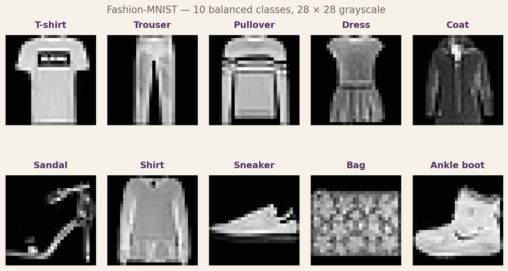
torchvisiontorchvisionYou already know Dataset and DataLoader from the previous class. torchvision ships Fashion-MNIST ready to use — one line of code downloads the entire dataset and hands you a Dataset object ready to wrap with a DataLoader.
from torchvision import datasets from torch.utils.data import DataLoader # `transform` is a preprocessing pipeline we'll define on the next slide # (ToTensor + Normalize — applied to every image the dataset yields) train_ds = datasets.FashionMNIST(root='./data', train=True, download=True, transform=transform) train_loader = DataLoader(train_ds, batch_size=64, shuffle=True) X, y = next(iter(train_loader)) print(tuple(X.shape), tuple(y.shape)) # (64, 1, 28, 28) (64,)
X.shape is (B, C, H, W) = (batch, channels, height, width). CNNs always expect this 4D format. Your grayscale batch is (64, 1, 28, 28) — the channel dimension is 1, not missing. Forget the channel dim and Conv2d will throw.
transforms.ComposeImages on disk are PIL objects with pixel values in [0, 255]. Neural networks train much better on small, zero-centred floats. Two standard transforms bridge the gap, and transforms.Compose chains them into one callable that the dataset applies to every image.
| Step | What it does | Values before → after |
|---|---|---|
| ToTensor() | PIL image → torch.Tensor, divides by 255 |
[0, 255] uint8 → [0.0, 1.0] float32 |
| Normalize(mean, std) | Subtract mean, divide by std — zero-centre | [0, 1] → roughly [−0.81, 2.02] (not [−1, 1]) |
from torchvision import transforms # Pre-computed Fashion-MNIST channel statistics FMNIST_MEAN = 0.2860 FMNIST_STD = 0.3530 transform = transforms.Compose([ transforms.ToTensor(), # PIL → float in [0, 1] transforms.Normalize((FMNIST_MEAN,), (FMNIST_STD,)), # zero-centre ])
The range is not what matters — Normalize produces roughly zero-mean with unit-ish standard deviation, not a strict [-1, 1] bound. What matters is that activations live around 0, which keeps gradients well-scaled through ReLU and the Linear layers. Compute mean and std once on your training set; save them as constants like we did here.
Fashion-MNIST ships a 60k training pool. Before training we carve out a validation set so we can watch generalisation per epoch without peeking at held-out test data. The idiomatic PyTorch + sklearn pattern: split the indices, wrap each half with torch.utils.data.Subset.
import numpy as np from sklearn.model_selection import train_test_split from torch.utils.data import Subset # Convert torch tensor → numpy so sklearn can consume it all_labels = full_train.targets.numpy() # Split INDICES — not images. No data is copied. train_idx, val_idx = train_test_split( np.arange(len(full_train)), test_size=0.2, random_state=0, # stratify=all_labels, # turn this on for imbalanced data ) train_set = Subset(full_train, train_idx.tolist()) val_set = Subset(full_train, val_idx.tolist())
Splitting 60k integers is free; splitting 60k image tensors wastes memory. Subset just tells the dataset which indices to serve — the transform and storage stay in one place.
With 95% class A, 5% class B, a random split can drop almost all B-examples into one side by chance. Pass stratify=labels so each side matches the full-pool class proportions. Always check label counts first.
Pass random_state=seed to train_test_split. Same seed → same split. Paired with torch.manual_seed this makes your pipeline bit-for-bit reproducible.
CrossEntropyLossRegression used MSELoss. Classification uses nn.CrossEntropyLoss, which internally does log-softmax + negative log-likelihood in one numerically stable step.
criterion = nn.CrossEntropyLoss() logits = model(X) # (64, 10) — raw scores, NO softmax loss = criterion(logits, y) # y is (64,), dtype long, values 0–9
True class = 3. Logits = [0.1, 0.2, 0.1, 2.5, 0.3, 0.1, 0.2, 0.1, 0.2, 0.2]. The softmax probability on class 3 is 0.68, so the loss is -log(0.68) ≈ 0.39. If the model had put 2.5 on class 6 instead, softmax on class 3 drops to 0.04 and loss jumps to -log(0.04) ≈ 3.2.
(B, num_classes), no softmax applied(B,), integer class indices (dtype long)CrossEntropyLossPyTorch does log-softmax internally for numerical stability. Adding a softmax yourself double-softmaxes the logits — gradients get squashed, the loss looks low but the model won't actually learn. Feed raw logits.
Today's task has 10 classes. If it had 2 (say cat vs dog), you'd choose between two idiomatic PyTorch setups. The good news: one of them requires almost no code change.
| Piece | Multi-class (today) | Binary · option A | Binary · option B |
|---|---|---|---|
| Final layer | Linear(128, 10) | Linear(128, 2) | Linear(128, 1) |
| Loss | CrossEntropyLoss | CrossEntropyLoss | BCEWithLogitsLoss |
Label y |
long · 0…9 | long · 0 or 1 | float · shape (B, 1) |
| Softmax/sigmoid before loss? | No (softmax baked into CE) | No (softmax baked into CE) | No (sigmoid baked into BCE) |
| Prediction | logits.argmax(dim=1) | logits.argmax(dim=1) | (sigmoid(logit) > 0.5).long() |
Flip num_classes from 10 to 2. Everything else — loss, label dtype, prediction — stays the same. This is the least-surprise route and the one I reach for first when the task is "just binary".
One output logit, BCEWithLogitsLoss, threshold at 0.5. Slightly fewer parameters, gives you a single "probability of positive class" scalar, and plays nicely with threshold-tuning workflows (see the ROC slide later). Matches how binary classifiers are written in most textbooks.
CrossEntropyLoss has softmax baked in. BCEWithLogitsLoss has sigmoid baked in. Never apply them yourself before the loss — you'll double-squash the logits and gradients vanish. At inference time, if you want probabilities to report to a user or plug into a threshold sweep, apply softmax (multi-class) or sigmoid (binary) on the model's raw logits then.
The training loop is identical to what you wrote in Class 03 — only the model and the loss changed. The architecture is new; the training pattern is not.
model = SimpleCNN() criterion = nn.CrossEntropyLoss() optimizer = torch.optim.Adam(model.parameters(), lr=1e-3) for epoch in range(10): model.train() for X, y in train_loader: logits = model(X) # forward loss = criterion(logits, y) # loss optimizer.zero_grad() # reset grads loss.backward() # compute grads optimizer.step() # update weights print(f"epoch {epoch+1}: loss={loss.item():.4f}")
| Epoch | Train acc | Test acc | What's happening |
|---|---|---|---|
| 1 | 0.69 | 0.78 | Filters start as random noise; first useful edge detectors emerge |
| 2 | 0.82 | 0.84 | Easy classes (Trouser, Bag, Sneaker) already solved |
| 3 | 0.85 | 0.85 | Gains now concentrate on the hard torso-garment confusions |
Input shape changed from (batch, features) to (batch, 1, 28, 28). The 5-line training loop didn't. The architecture is where the work happens.
Training is done. Now we open the model up with the metrics every production classifier gets scored on — accuracy, confusion matrix, precision / recall / F1, and ROC — and finish by peeking at the filters the network actually learned.
Five lenses on the same trained model. Each one answers a different question — no single number tells the whole story.
| Metric | The question it answers | When to care |
|---|---|---|
| Accuracy | How often is the top prediction right? | Balanced classes, every class equally important |
| Confusion matrix | Which classes does the model confuse with which? | Always — it's where debugging starts |
| Precision / Recall / F1 | For one class: how trustworthy are the positives, and how many of them did we catch? | Imbalanced classes or asymmetric costs (fraud, safety) |
| ROC / AUROC | How well does the model rank positives above negatives, across every threshold? | Threshold needs to be chosen deliberately (risk / review cost) |
We'll walk through them in the order above — single prediction → aggregate over the whole test set → class-specific metrics → threshold sweep.
Before we trust any aggregate metric, zoom in on one image and watch the model think out loud. The raw model output is 10 real-valued logits. softmax turns them into probabilities summing to 1. argmax picks the class with the highest probability — that's the prediction.
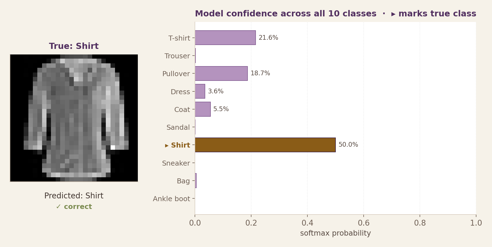
model.eval() correct, total = 0, 0 with torch.no_grad(): for X, y in test_loader: logits = model(X) # (B, 10) — raw scores preds = torch.argmax(logits, dim=1) # (B,) — class index correct += (preds == y).sum().item() total += y.size(0) accuracy = correct / total print(f"Test accuracy: {accuracy:.2%}") # ≈ 85%
The model gives Shirt 50%, T-shirt 22%, Pullover 19% — correct, but unconfident. That is genuine uncertainty: these three torso garments really do look alike at 28 × 28. Accuracy collapses that into a single "correct" tick and throws the nuance away.
A two-conv CNN at this scale reaches 85–91% on Fashion-MNIST in 5–10 epochs on CPU. Overall accuracy is a fine first number — but it averages 95% on Trouser with 38% on Shirt. For the real story we'll need the confusion matrix next.
We only compute softmax after training, when we want probabilities to show the user or feed a threshold-based decision. During training, CrossEntropyLoss works on raw logits — it does the softmax internally. Never apply softmax yourself before the loss.
We just looked at one prediction. Now aggregate every test prediction into a single picture. Accuracy is one number; a confusion matrix is 100 numbers. Row = true class, column = predicted class. The diagonal is correct; everything off-diagonal is a confusion.
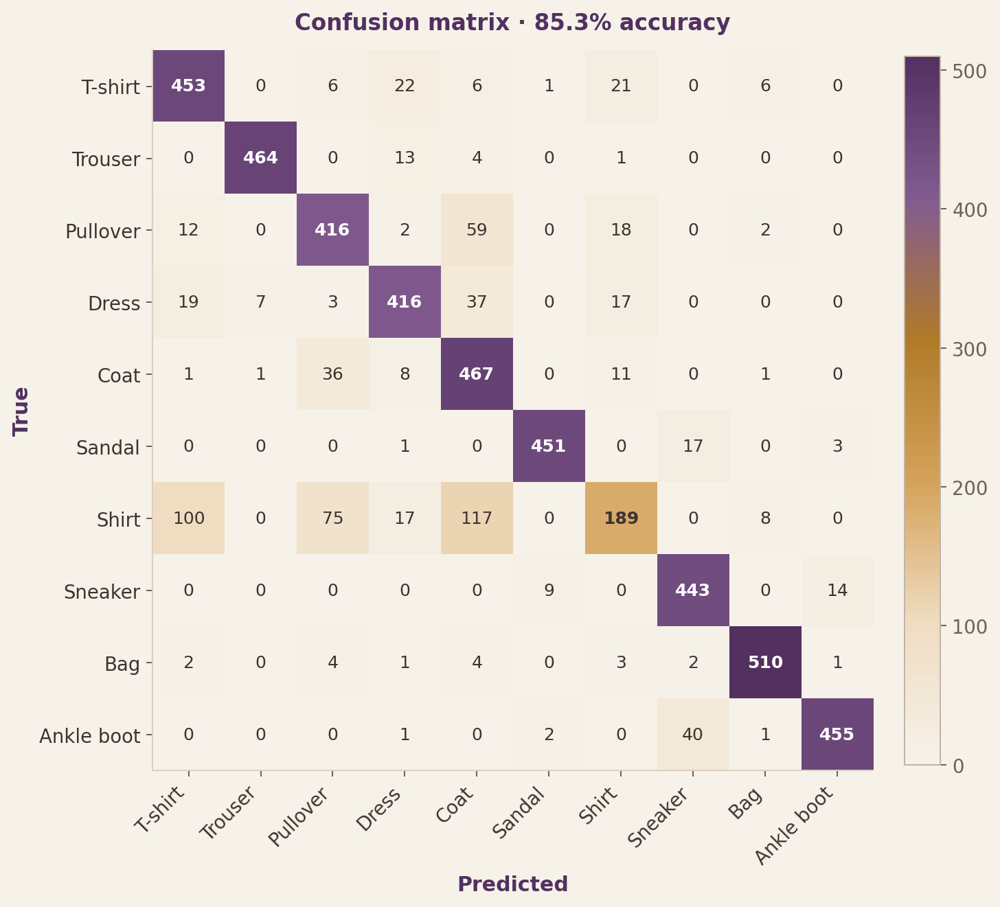
What to notice: a dark diagonal means the model is mostly right. Look for clusters of off-diagonal weight — rows that light up outside the diagonal are the classes the model struggles with, and the columns they drift into tell you what it confuses them with.
This is the insight accuracy cannot give you. If you needed to ship this classifier, the fix is specific: more training data for torso garments, or higher resolution input (28×28 loses detail), or data augmentation — not "add more epochs".
The multi-class matrix told us Shirt is the model's biggest weakness. Collapse it to one "vs" pair — Shirt = positive, T-shirt = negative — and the familiar 2 × 2 TP/FP/FN/TN layout appears, unlocking the four metrics every classifier has to report.
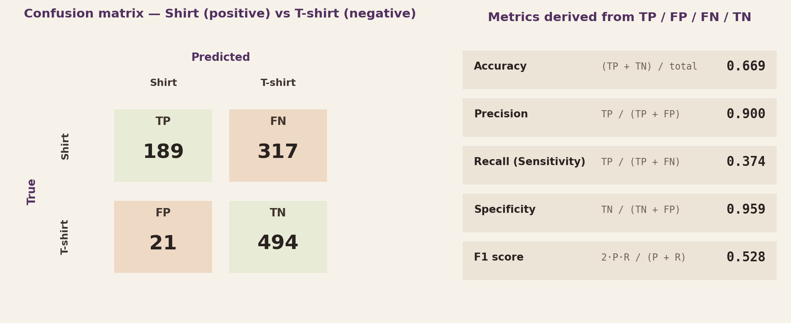
Precision 0.90 means: when the model says Shirt, it's almost always right. Recall 0.37 means: when a Shirt actually comes in, the model only catches ~1 in 3. The model is conservative — it demands strong evidence before calling Shirt, so it misses many.
Fraud / spam filter: optimise precision — false alarms cost users. Cancer screening / safety alerts: optimise recall — missing a true positive is catastrophic. F1 balances the two when both matter equally.
Accuracy is 0.669 but F1 is 0.528. The gap opens because the negatives dominate (515 T-shirts vs 506 Shirts — almost balanced here, but imagine 95/5). Accuracy rewards getting the majority class right; F1 does not. When classes are imbalanced or you care about the rare class, track precision/recall/F1, not accuracy.
Every confusion matrix assumes one decision threshold (softmax probability > 0.5 → predict Shirt). But you can pick any threshold — lower it and you'll catch more Shirts (recall ↑) at the cost of more false positives (precision ↓). The ROC curve plots this trade-off across every possible threshold.
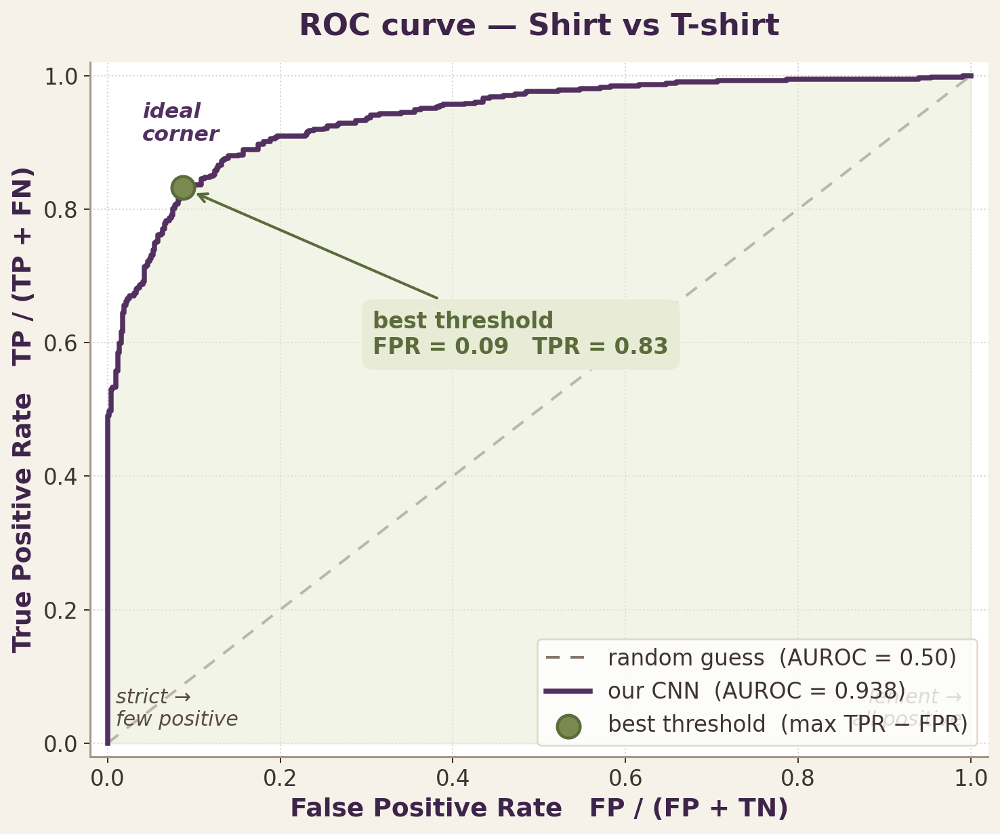
Area under the ROC curve. Threshold-independent — it measures how well the model ranks positives above negatives, regardless of where you cut. 0.5 = random, 1.0 = perfect. For this Shirt-vs-T-shirt head the CNN scores 0.94 — the model has the discriminating information, it's just that the default 0.5 threshold isn't the best one.
The amber dot marks the threshold that maximises TPR − FPR (Youden's J) — that's the spot on the curve farthest from the diagonal. Adopt that threshold and recall jumps from 0.37 to 0.83 with only a modest increase in false positives. Shipping a classifier means picking this cut deliberately, not accepting the default.
The conv1 layer has 16 filters that were random at initialisation. After training, they become real pattern detectors. The clearest way to see this is to run one real image through the trained layer and look at all 16 output feature maps.
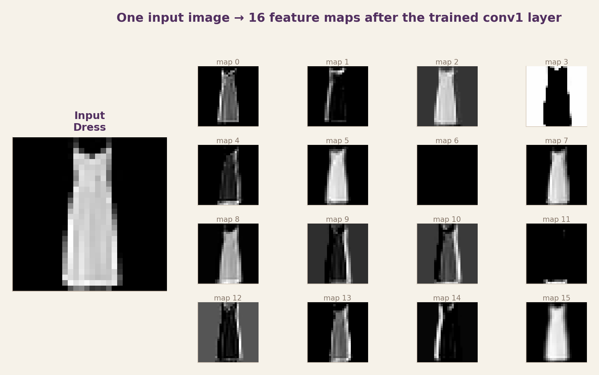
What to notice: no two maps look alike. Some light up along the outer silhouette, some respond to internal texture, some fire only on diagonal edges. Each map is the same image scanned by a different 3 × 3 filter — and every one of those filters was discovered by gradient descent, not designed by a human.
Gradient descent turned random weights into 16 distinct edge and gradient detectors — and this is just layer 1. Stack more conv layers and you get textures, parts, and eventually object-level features. This emergent feature hierarchy is the property that makes CNNs the foundation of every modern vision system — and the reason transfer learning (next class) works.
CNN intuition gets a lot easier when you can touch the tensors. These two browser-based tools are the best way to build that intuition — click through them before the next class.
Interactive tour of a trained CNN: hover over any feature map, see the filter that produced it, watch the convolution animate on real pixels. Covers conv, ReLU, pool, flatten, softmax, and the full forward pass, all in-browser.
Draw a digit and watch a trained CNN process it layer by layer, rendered in 3D. Every feature map, every activation, every class vote — visible at once. The clearest demonstration of what a CNN actually does on one image.